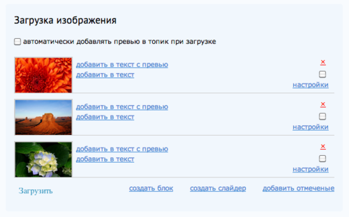
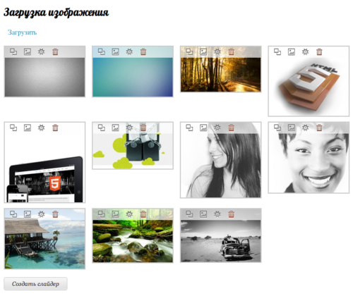

LiveStreet для людей
Завязавшись с проектом «Capoeira.IN»,
приходится решать множество вопросов.
Один из них — как сделать так, чтобы пользоваться LiveStreet (платформой
для сайта) и самим сайтом было удобно? На сайте могут
писать статьи самые разные люди, поэтому хотелось, чтобы порог вхождения
был низким, насколько это возможно.
Но разработчики LS, как и разработчики плагинов к LS, очень часто забывают
о том, кто будет пользоваться плодами их работ.
Например, модуль массовой загрузки изображений в пост выглядел вот так:

Пришлось подумать и отсечь все лишнее.
-
Что такое «автоматически добавлять превью в топик при загрузке»? С чем
оно связано и как оно работает?
-
Почему основополагающая «Загрузка» расположена под изображениями?
Впрочем, пусть будет
-
Ах да, «добавлять превью» связано с загрузкой! Но почему они в разных
концах формы?
-
Зачем 99% пользователям на нашем сайте выкладывать фотографии «блоком»
(превьюшки, одна за другой, с новой строки)? У нас есть вывод слайдером
и прекрасная «Фоторама»
-
Зачем 99% пользователям нужна ссылка (а на деле — кнопка) «Добавить
отмеченные»? Как они поймут, что она делает? Вставляет превью со ссылкой
или вставляет большую картинку?
-
Почему «добавить отмеченные» добавляет в текстовое поле отмеченные
изображения, а «создать слайдер» и «создать блок» вызывают попап с
отдельным выбором картинок для слайдера/блока? Они же равнозначные
кнопки.
-
Зачем так странно использовать пространство? Почему кнопки выглядят как
ссылки? Что означают эти странные ссылки?
Убираем чекбоксы и кнопку «Создать блок». Заменяем тексты на иконки.
Меняем отображение картинок. Поднимаем «Загрузку» вверх. Убираем, как
ненужный, чекбокс «Добавлять превью».
Получаем на 142% лучший результат. Это не идеал, нет. Но с этим уже можно
работать.
